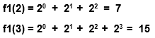

Objetivo:
Que apliques los conocimientos sobre los ciclos FOR y DO
WHILE en el desarrollo de un programa

Forma
de trabajo:
Actividad individual

Instrucciones:
- De manera individual, desarrolla el algoritmo y posteriormente
el programa completo en C para cada uno de los ejercicios que se presentan
a continuación.
- Entrega, vía la plataforma, los archivos *.c que
contengan los programas en C. Es importante que al inicio de cada programa
coloques el o los algoritmos que utilizaste.
Construye un programa completo en C libre de warnings y errores, que incluya
las siguientes funciones y procedimientos:
- La función f1 que recibe un valor entero
mayor o igual a uno y utilizando un ciclo for regresa el resultado de la
siguiente sumatoria:

Por ejemplo:

- La función f2 que recibe un valor entero
mayor o igual a uno y utilizando un ciclo for regresa el resultado de la
siguiente multiplicatoria:

.
Por ejemplo:
.
f2(2)
= (3(1)-1) * (3(2)-1) = 10
f2(4)
= (3(1)-1) * (3(2)-1) * (3(3)-1) * (3(4)-1) = 880
- La función f3 que recibe un valor entero
mayor o igual a uno y utilizando un ciclo for regresa el resultado de la
siguiente serie:
.
f3 ( n ) = 1 - 2 + 3 - 4 + 5 - ... n
Por ejemplo:
. f3( 1 ) = 1
f3( 2
) = 1 - 2 = -1
f3( 3
) = 1 - 2 + 3 = 2
f3( 4
) = 1 - 2 + 3 - 4 = -2
- El procedimiento incremento que recibe 2 parámetros
reales, el límite inferior de la serie LI y el límite
superior de la serie LS.Y utilizando un ciclo for, el procedimiento
deberá desplegar en pantalla la secuencia de números desde
LI hasta el LS en incrementos de 0.4
.
Por ejemplo:
incremento(3.0,
5.0), desplegará en pantalla: 3.0, 3.4, 3.8, 4.2, 4.6, 5.0
incremento(5.1, 7.2), desplegará en pantalla:
5.1, 5.5, 5.9, 6.3, 6.7, 7.1
- El procedimiento aleatorios, que despliega en pantalla
50 números aleatorios entre -40
y 80.

Forma
de entrega:
- Envía tu tarea por blackboard, no se aceptarán tareas
por ningún otro medio.
- Envía solo tus archivos *.c.
- Las tareas enviadas posteriormente a la fecha límite NO
SERÁN CALIFICADAS.
.
INSTRUCCIONES PARA ENVIAR TU TAREA
POR BLACKBOARD
- Haz clic en la actividad de Entrega de Tarea.
- Escribe comentarios si lo consideras necesario.
- Da clic en el botón de Browse My Computer y localiza
el archivo *.c. Si necesitas agregar más archivos repite
este proceso hasta agregar todos tus archivos.
- Haz clic en Submit.
- Al indicar que ha subido exitosamente hacer clic en OK.
|